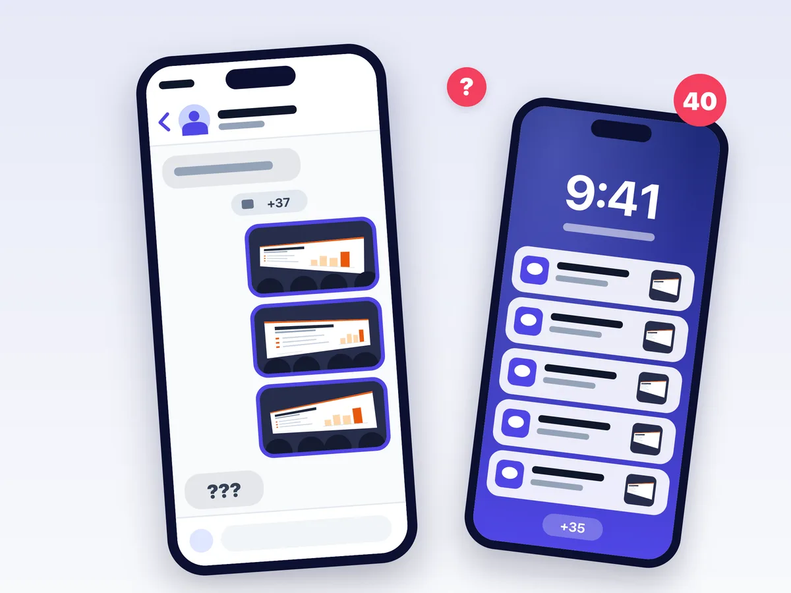

こんな経験はありませんか？
-

角度の問題
端の席から撮ると、スライドが斜めに写ってしまう。
SlideShotはスライドを見つけて、本来の形にまっすぐ補正します。まるで元の資料を手に入れたように。
-

カメラロールの問題
写真が500枚を超えると、どのスライドがどの講演のものかわからない。
SlideShotはすべてのスライドを読み取り、講演、講演者、カンファレンスごとに整理します。
-

記憶の問題
1週間後、あの講演は何の話だった？
SlideShotは各スライドのテキストとメモをまとめて保存し、すべて検索できるようにします。
-

共有の問題
講演を共有するのに、40枚の写真を送る必要はありません。
SlideShotなら、講演全体を1枚の画像または1つのPDFで共有できます。


SlideShotでできること
-
撮影
すべてのスライドを自動で撮影
iPhoneをプロジェクターのスクリーンやモニターに向けるだけ。SlideShotがスライドを見つけ、ブレが収まるのを待って撮影します。撮影済みのスライドはスキップします。
-
補正
どの席からでも、まっすぐ平らに
遠近補正で、会場の端の席からでも各スライドの本来の形を復元します。望遠レンズ搭載のiPhoneでは、自動ズームが望遠レンズを使います。
-
自動ラベル付け
講演とカンファレンスごとに整理
SlideShotがすべてのスライドを読み取り、講演ごとにタイトル、講演者、カンファレンス、日付をラベル付けして、講演をカンファレンスごとにまとめます。入力は不要です。
-
メモと検索
あとからどのスライドもすぐ見つかる
どのスライドにも短いメモを追加でき、タイトル、講演者、スライドの文字、メモを横断して検索できます。
-
共有
講演全体を1枚の画像に
講演をスマートフォン幅の1枚の縦長画像として共有できます（メモの表示・非表示を選択可能）。PDFとして書き出すこともできます。
-
プライバシー
データはiPhoneの中に
アカウントもサーバーもトラッキングもありません。SlideShotはデータを一切収集せず、スライドとメモはデバイスの中にとどまります。
iOS 26以降が必要です。